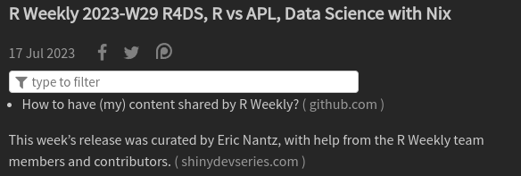
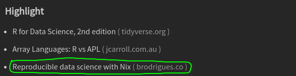
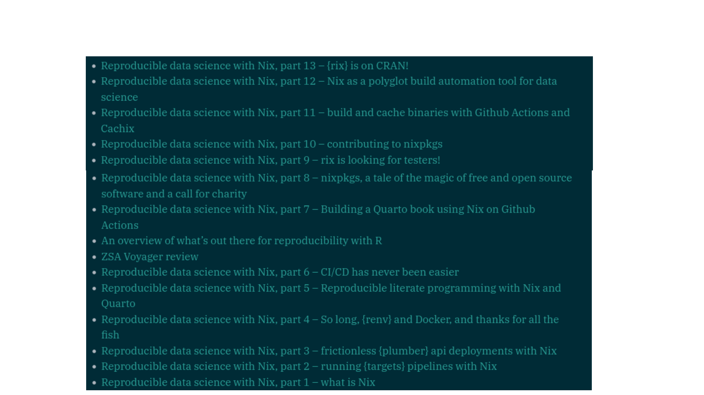
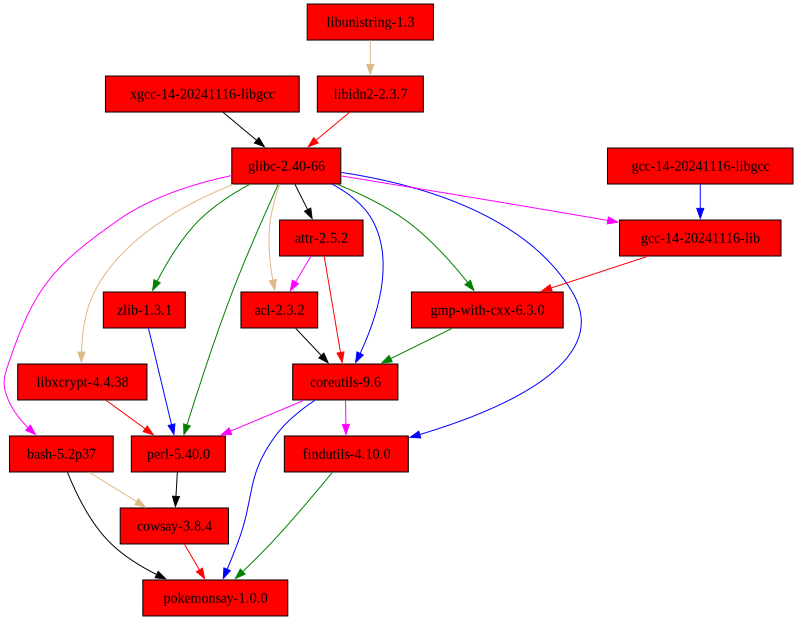

In the Nix of Time
A new approach to Shiny development & deployment with Nix and {rix}
2025-04-11
Managing Dependencies


Worlds Collide

Bruno Rodriguez



Under the Nix Hood
# which pokemonsay
/nix/store/xq1cs65ic3m0qdpwcjvdgd7yfq8c3ssv-pokemonsay-1.0.0/bin/pokemonsay# https://github.com/NixOS/nixpkgs/blob/nixos-24.11/pkgs/by-name/po/pokemonsay/package.nix
{
lib,
stdenvNoCC,
fetchFromGitHub,
fetchpatch,
cowsay,
coreutils,
findutils,
}:
stdenvNoCC.mkDerivation rec {
pname = "pokemonsay";
version = "1.0.0";
src = fetchFromGitHub {
owner = "HRKings";
repo = "pokemonsay-newgenerations";
rev = "v${version}";
hash = "sha256-IDTAZmOzkUg0kLUM0oWuVbi8EwE4sEpLWrNAtq/he+g=";
};
patches = [
(fetchpatch {
# https://github.com/HRKings/pokemonsay-newgenerations/pull/5
name = "word-wrap-fix.patch";
url = "https://github.com/pbsds/pokemonsay-newgenerations/commit/7056d7ba689479a8e6c14ec000be1dfcd83afeb0.patch";
hash = "sha256-aqUJkyJDWArLjChxLZ4BbC6XAB53LAqARzTvEAxrFCI=";
})
];
postPatch = ''
substituteInPlace pokemonsay.sh \
--replace-fail \
'INSTALL_PATH=''${HOME}/.bin/pokemonsay' \
"" \
--replace-fail \
'POKEMON_PATH=''${INSTALL_PATH}/pokemons' \
'POKEMON_PATH=${placeholder "out"}/share/pokemonsay' \
--replace-fail \
'$(find ' \
'$(${findutils}/bin/find ' \
--replace-fail \
'$(basename ' \
'$(${coreutils}/bin/basename ' \
--replace-fail \
'cowsay -f ' \
'${cowsay}/bin/cowsay -f ' \
--replace-fail \
'cowthink -f ' \
'${cowsay}/bin/cowthink -f '
substituteInPlace pokemonthink.sh \
--replace-fail \
'./pokemonsay.sh' \
"${placeholder "out"}/bin/pokemonsay"
'';
installPhase = ''
mkdir -p $out/{bin,share/pokemonsay}
cp pokemonsay.sh $out/bin/pokemonsay
cp pokemonthink.sh $out/bin/pokemonthink
cp pokemons/*.cow $out/share/pokemonsay
'';
doInstallCheck = true;
installCheckPhase = ''
(set -x
test "$($out/bin/pokemonsay --list | wc -l)" -ge 891
)
'';
meta = with lib; {
description = "Print pokemon in the CLI! An adaptation of the classic cowsay";
homepage = "https://github.com/HRKings/pokemonsay-newgenerations";
license = licenses.mit;
platforms = platforms.all;
maintainers = with maintainers; [ pbsds ];
};
}# nix-store --query --requisites $(which pokemonsay)
/nix/store/m2047a1xwgblgkrnbxz0yilkaqfrbf2b-xgcc-14-20241116-libgcc
/nix/store/nj19yxkqf0iqjqn4x6dbglsvqk5bgsbs-libunistring-1.3
/nix/store/y2xxdhhjy2l5mgpm3d0rw2wxmpd61my4-libidn2-2.3.7
/nix/store/rmy663w9p7xb202rcln4jjzmvivznmz8-glibc-2.40-66
/nix/store/pn0rk0wsmkjazbz380y8xzb99n8sr07g-attr-2.5.2
/nix/store/4izi23kn57b3cw47jddzq14wcv01b5y5-acl-2.3.2
/nix/store/58br4vk3q5akf4g8lx0pqzfhn47k3j8d-bash-5.2p37
/nix/store/ll9dm3r87v4r46a0km0zck4968m60vys-libxcrypt-4.4.38
/nix/store/xijpnhg8mg0g4lahwrxdwylpcq7249gc-zlib-1.3.1
/nix/store/id29wx2vp10d5xi6wzsykd4rb9ssaikx-gcc-14-20241116-libgcc
/nix/store/ik84lbv5jvjm1xxvdl8mhg52ry3xycvm-gcc-14-20241116-lib
/nix/store/rlpanzl29s3gv3wgs5720q04rbgysl8a-gmp-with-cxx-6.3.0
/nix/store/yh6qg1nsi5h2xblcr67030pz58fsaxx3-coreutils-9.6
/nix/store/8v0r6qxs5cps7cgcjp215895wja6k0by-perl-5.40.0
/nix/store/ixskg19qvf8gfwbdlajc4498c1km1jyf-cowsay-3.8.4
/nix/store/xq5f95pp297afc2xjgrmhmf9w631qp7m-findutils-4.10.0
/nix/store/xq1cs65ic3m0qdpwcjvdgd7yfq8c3ssv-pokemonsay-1.0.0